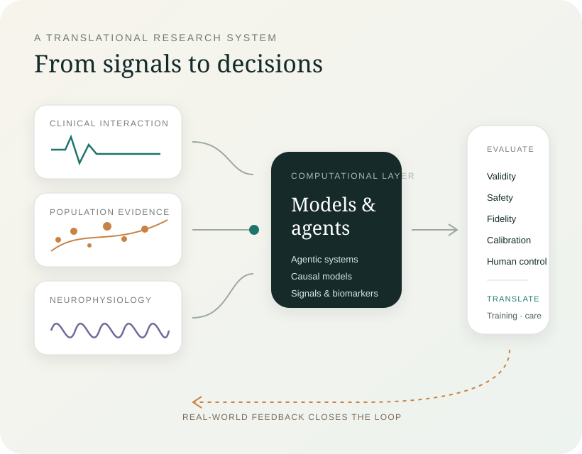

Human-governed clinical AI
Agentic systems for structured psychiatric interviewing, simulation, psychotherapy training, and decision support—with explicit roles, auditability, and human supervision.
Program details →We develop and evaluate human-governed AI, causal models, and neurotechnology for psychiatry—linking clinical interaction, population evidence, and brain signals.

Symptoms emerge through conversation, behaviour, social context, physiology, and time. Our work asks how those signals can be modeled without losing clinical meaning—and how computational systems can be evaluated before they influence real decisions.
Projects span the interaction level, population level, and neurophysiological level. A shared evaluation philosophy connects them.
Agentic systems for structured psychiatric interviewing, simulation, psychotherapy training, and decision support—with explicit roles, auditability, and human supervision.
Program details →Evaluation under conversational challenge, causal and interpretable machine learning, digital-twin validation, and population mental-health evidence.
Program details →EEG, neural biomarkers, computational modeling, and personalized brain stimulation for neuropsychiatric disorders.
Program details →Visual summaries below are original site graphics based on reported methods and results; each links to the primary paper.

A proof-of-concept architecture separates interviewing, interpretation, navigation, and screening instead of asking one model to do everything at once.
Read the paper ↗
Role-separated student, patient, evaluator, and feedback agents were evaluated against prompt-defined competence gradients and human ratings.
Read the paper ↗Our projects differ in data and domain, but the research logic stays deliberately consistent.
Start from a clinical workflow, human need, population question, or physiological mechanism.
Construct the smallest auditable model or system that can address the question.
Probe validity, safety, fidelity, bias, calibration, and interaction effects.
Keep human judgment, escalation, and boundaries explicit rather than implicit.
Study whether the system improves training, evidence, workflow, or intervention.
Selected projects make methods, code, or reusable infrastructure available for inspection and extension.
Research implementation for structured interview orchestration, safety red flags, privacy-aware preprocessing, and simulation-based evaluation.
View repository ↗A modular causal-impact framework developed in industry R&D, supporting multiple probabilistic forecasting backends for intervention analysis.
View repository ↗Current work and recent publications acknowledge support from CIHR, Brain Canada Foundation, and Mitacs.


Funder marks are shown solely to acknowledge research support; all marks remain property of their respective organizations.
We work best with people who care about both technical quality and what a model means in the setting where it will be used.